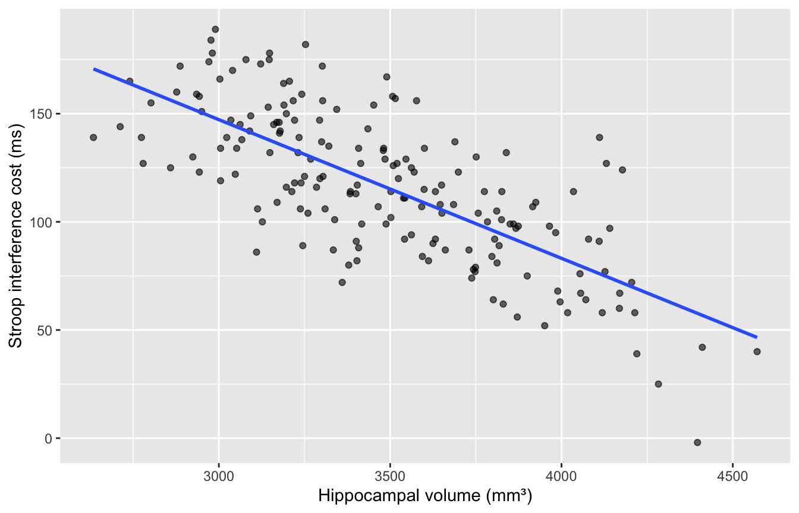

Optional extra practice, and unlike practicals 1 to 3 this one runs alongside no lecture at all. It covers the handling and plotting that Prof. Noventa’s analysis scripts assume you already know, and that the Introduction to R lectures do not cover. Nothing here is assessed.
What you will be able to do
By the end of this practical you should be able to:
pull out the rows and columns you want, and sort a table;
create a new variable by recoding an existing one;
set the order of a factor’s levels, and say why that changes a model;
summarise a variable within each diagnostic group;
draw a histogram, a boxplot and a scatterplot, with axes a reader can understand;
turn a wide table into a long one, which is the shape repeated-measures analyses need.
A zip containing the R script, the data, and an .Rproj file. Unzip it somewhere you can find again, then double-click the .Rproj.
Before you start
ImportantOpen the .Rproj file first
Double-click the .Rproj file in this folder. If you see cannot open file 'data/memclinic.csv', run getwd() — you opened the script rather than the project.
ImportantOne line at a time — do not press Source
Ctrl+Enter (Cmd+Enter on a Mac) runs the current line. The Source button will fail on the whole file while any ___ blank is still unfilled.
# We call dplyr and psych functions with the pkg::fun() form rather than# loading them, so it is always obvious where a function came from.memclinic <-read.csv("data/memclinic.csv")str(memclinic)
This catches people when a function suddenly complains that it was given a vector where it wanted a table.
subset() says the same thing more readably:
severe <-subset(memclinic, group =="AD"& moca <20)nrow(severe)
[1] 36
Note it takes bare column names, with no memclinic$. It is a convenience for interactive work; inside your own functions it can behave unexpectedly, so the [ ] form is the safer habit.
Sorting
order() returns the positions that would put a vector in order, and you feed those back in as row numbers.
Conditions are checked in the order you write them, and the first match wins — which is why >= 26 has to come before >= 20. The final TRUE is the catch-all.
Factors, and why their order matters
In practical 2 you saw that group arrives as text, and that making it a factor sorts the levels alphabetically:
levels(factor(memclinic$group))
[1] "AD" "HC" "MCI"
AD first. That is not how anyone would present these groups, and it is not harmless, because the first level becomes the baseline that everything else is compared against.
The intercept is now 28.38, the HC mean, and the other two numbers are the MCI and AD deficits relative to healthy controls — which is what a clinical reader expects. Same data, same model, every number different.
contrasts(memclinic$group)
MCI AD
HC 0 0
MCI 1 0
AD 0 1
That matrix is what R actually put into the model. Practical 6 is about nothing else.
relevel() moves one level to the front without retyping them all:
Select the columns you want first. psych::describe(memclinic) will happily report a mean for id and group, marking them with a * — a number that means nothing. This is why the course scripts write psych::describe(memclinic[, c("hippo_vol_mm3", "stroop_cost_ms")]) instead.
Look at skew for csf_ptau: strongly positive, so the distribution has a long right tail and its mean sits well above its median. The next section makes that visible.
That is wide format. Most modelling functions want long format: one row per observation, with a column saying which condition it came from. You could build it by hand with what you already know:
reshape() is the least friendly function in base R. Nobody memorises its arguments — copy this call and change the names. (tidyr::pivot_longer() is the modern alternative; the appendix shows it.)
Joining the two files
stroop-rm.csv has no group column, on purpose. merge() attaches it from the cohort file, matching on id:
long <-merge(long, memclinic[, c("id", "group", "age")], by ="id")head(long, 3)
Reaction time rises from congruent to neutral to incongruent — the Stroop effect.
The other way to draw this
Every regression script in this course uses ggplot2, so it is worth seeing the same picture in both dialects. The professor’s own comment in Regression1.R is “better graphic facilities with ggplot package”.
library(ggplot2) # notice the masking messageggplot(memclinic, aes(x = hippo_vol_mm3, y = stroop_cost_ms)) +geom_point(alpha = .6) +geom_smooth(method ="lm", se =FALSE) +labs(x ="Hippocampal volume (mm³)",y ="Stroop interference cost (ms)")

Three ideas and that is enough for now: aes() says which variable maps to which part of the picture, each geom_ adds a layer, and layers are joined with +. You do not need it here, but every regression script in the course uses it, so it is worth having seen once.
Exercises
Exercise 1 — find the extreme cases
Pull out the most impaired patients, then look at the extremes of hippocampal volume across the whole cohort.
severe <-subset(memclinic, group =="___"& moca < ___)nrow(severe)severe[order(severe$___), c("id", "moca", "hippo_vol_mm3")]biggest <- memclinic[order(-memclinic$hippo_vol_mm3), ]head(biggest[, c("id", "group", "hippo_vol_mm3")], 5)
Exercise 2 — a clinical flag, and the reference level
Create a screening flag, then put the factor levels in clinical order and look at what happens to the model.
In df[rows, columns], the comma is what separates the two. One column with a comma gives a vector, not a table.
ifelse() for two outcomes, dplyr::case_when() for more, first match wins.
A factor’s levels are alphabetical unless you set them. The first level is the baseline every model compares against.
tapply() and aggregate() summarise within groups.
Label your axes.
Wide is for reading, long is for modelling.
Going further
The appendix for this session covers loops and the apply family, pipes, graphics in more depth including saving figures to file, the other ways to reshape, and how merge() can silently duplicate your rows.